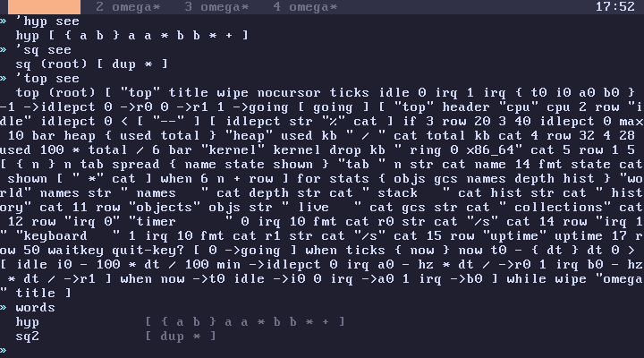

subverge
subvergeNames
- Definitions
- Symbols
- Lookup order
- Redefining
- Forgetting
- Looking at definitions
- Locals
- Dynamic scoping
- Allowed names
Every word you call is a name that omega looks up when the word runs. Names can be bound in four places: locals inside a running quote, your tab's definitions, root, and the built-in words written in C. The sections below cover how each kind is made and the order they are searched in.
Definitions
[ dup * ] :sq
42 :answer
:name pops the top value and binds it to a name in your tab. Using the name runs the value if it is a quote and pushes it otherwise. Definitions belong to the tab that made them and are part of its world. For a word every tab can see, use root.
Symbols
A leading quote mark turns a name into a value, which is how words that operate on other words receive them:
'sq see the definition
'sq help the help entry
'sq get the quote itself
'sq defined? 1 or 0
"sq" >sym get same as 'sq get
Lookup order
- bound locals
- your tab's definitions
- root
- built-in words
The first match wins, so [ 1 ] :dup changes dup in your tab only.
Redefining
Binding a name that is already defined replaces it, and every word that uses the name picks up the new version straight away:
[ dup dup * * ] :cube
[ cube 1 + ] :cube+1
2 cube+1 . 9
[ 0 ] :cube
2 cube+1 . 1
cube+1 stores the name cube, not the code cube had when cube+1 was defined. The name is looked up again each time cube+1 runs. This is late binding, and it is why you can fix a helper and have every word that calls it use the fix without redefining them.
The same goes for root. A definition in your tab with the name of a root word replaces that word for everything running in your tab, including root programs. Define [ "me" ] :user and sys shows me@subverge in that tab only.
Forgetting
[ 2 ] :sq
4 sq . 2
'sq forget
4 sq . 16, root's sq again
forget only removes definitions made in your tab, which uncovers whatever they shadowed. 'top forget without a tab definition of top fails with top isn't defined in this tab. Root words are changed by editing root.
back undoes a forget like any other line.
Looking at definitions
see prints a definition and marks root definitions with (root). words lists your tab's definitions, and src returns the source of the root unit that defines a name.

'name edit edits a tab definition in scrawl. Root words use 'name open.
Locals
[ { a b } a b - ] :diff
9 4 diff 5
{ a b } pops values into locals in written order, so a is 9.
->x assigns to the innermost local x if one is bound, and otherwise binds a new one that lasts until the enclosing quote or line ends:
9 ->x x . prints 9
x . fails on the next line
Use :x for a value that persists. At most 256 locals can be bound at once, which limits recursion depth (flow).
Dynamic scoping
Locals are dynamically scoped, so a word can see the locals of its callers:
[ n . ] :shown
[ { n } shown ] :caller
5 caller prints 5
shown never binds n, but it runs while caller's binding is live. This lets a helper read its caller's state without passing it on the stack.
Keep in mind that a callee can shadow your locals by binding the same name, and a word that reads a name it never bound silently gets the caller's value instead of failing. Bugs that only appear when a word is called from one particular place usually come from this, so check local names first when a word works at the prompt but not inside another word.
Allowed names
A name is any token that isn't a number, string or bracket, so km>mi, quit-key? and >hex are all valid, and 2x is a name while 2 is a number. Units have stricter rules.
Using an unbound name fails with foo isn't defined and undoes the line. The check happens when the word runs, not when it is defined, so a quote can mention a word that doesn't exist yet. Defining it later makes the quote work:
[ helper 2 * ] :twice-helper
[ 21 ] :helper
twice-helper . 42